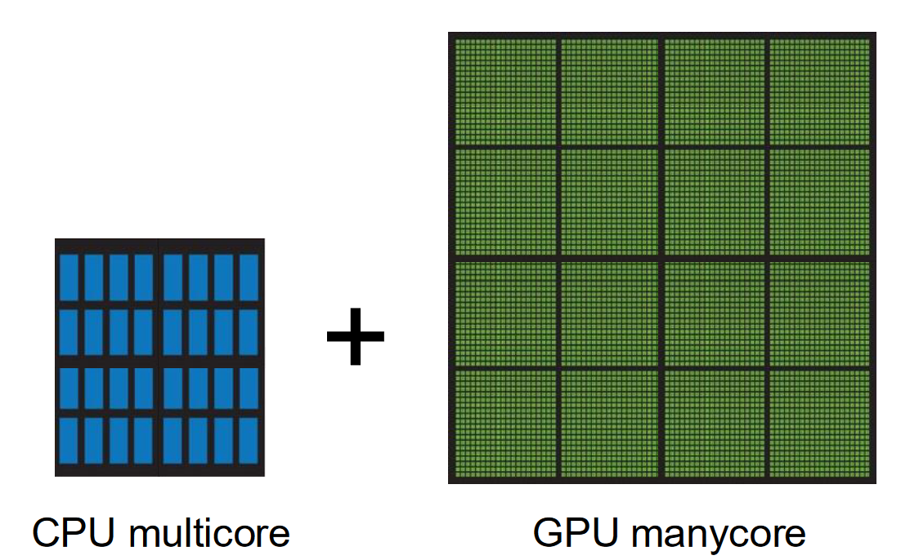

Introduction
What is Concurrency?
- Two or more execution flows (e.g. threads) run simultaneously.
Introduction of multiple cores within a CPU came alongside a plateau in clock speed improvements.
- Single-threaded software no longer enjoys significant (free!) performance improvements with upgrades of the CPU.
- Re-architecting of single-threaded software is required to take advantage of the multiple cores available on a modern CPU.
Why is Concurrency Difficult?
- Many different possible Interleavings (Scheduled order of concurrent tasks) makes debugging and reproducability difficult.
- Sharing of data and resources between threads is error-prone.
What is Massively Parallel?
A large number of computer processors.

The difference between multicore and manycore?
- A difference in magnitude.
- Multicore refers to having multiple computational cores while manycore refers to having many more multiple computational cores.
Readings
What's the Difference Between a CPU and a GPU?
| CPU | GPU |
|---|---|
| Several cores | Many cores |
| Low latency | High throughput |
| Good for serial processing | Good for parallel processing |
| Can do a handful of operations at once | Can do thousands of operations at once |
- CPUs tend to have few cores with lots of cache memory that can handle a few threads simultaneously.
- GPUs tend to have hundreds of cores that can handle thousands of
threads to achieve parallel computing.
- GPUS do this by allowing you to divide tasks among their many processors.
What Makes Parallel Programming Hard?
Finding Parallelism in Tasks is Hard
- Some tasks are easy to to parallelize:
- Tasks that are independent of each other.
- Tasks with low data dependency.
- ex: Two dudes can paint a wall 2x as fast by painting different halves.
- Some tasks are hard/impossible to parallelize.
- Tasks that are interdependent.
- ex: Cooking (recipe steps often depend on previous steps being completed.)
- Many programs have artificial inter-task dependencies because programmers wrote them with a single-threaded mind set.
- It can be difficult to re-write a program to be multi-thread capable.
Debugging is Difficult
- Different interleavings of tasks, particularly in combination with
shared mutable data, can cause non-deterministic bugs (scheduling
of tasks is non-deterministic.)
- ex: Two threads read a number from shared memory, increment its value by 1,
and write the new value back to memory. The intent is to have the original
value incremented by 2. The following interleaving will produce incorrect
results:
- Thread 1 reads the value from memory and saves it in a local variable.
- Thread 1 increments the local var.
- Thread 2 reads the value from memory and saves it locally.
- Thread 2 increments the local var.
- Thread 1 writes its local value to memory.
- Thread 2 writes its local value to memory.
- ex: Two threads read a number from shared memory, increment its value by 1,
and write the new value back to memory. The intent is to have the original
value incremented by 2. The following interleaving will produce incorrect
results:
Optimizing for Performance is Difficult
Often, the first working version of a parallel version is slower than the serial version:
- Too many (task) dependencies still exist.
- Possible due to iterative removal of these dependencies.
- Contention for hardware resources.
(require '[clojure.core.reducers :as r])
;; Data should be in format: [[a1 b1] [a2 b2] ...]
;; i.e. pairs of numbers, one from each vector.
(defn dot-parallel [vs]
(->> vs
(r/map (fn [[a b]] (* a b)))
(r/fold +)))
(defn dot-sequential [vs]
(transduce
(map (fn [[a b]] (* a b)))
+
vs))
The Free Lunch Is Over...
TL;DR
Terms and other things to consider:
- Cache Coherency.
- Other things...
Apple M1 & M3
A bunch of Apple marketing.